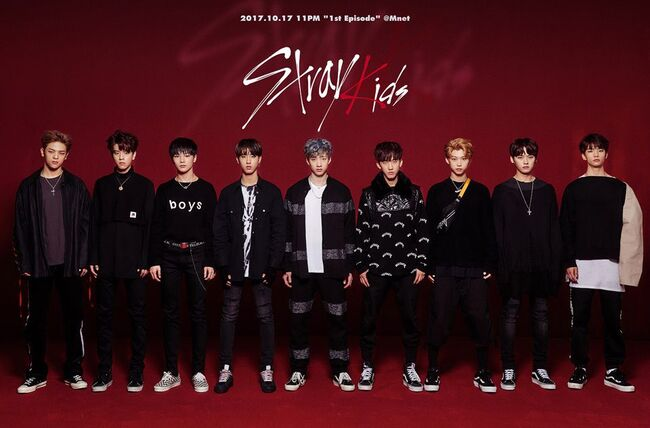
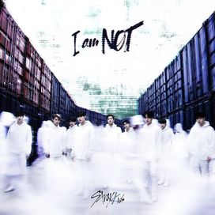
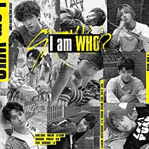
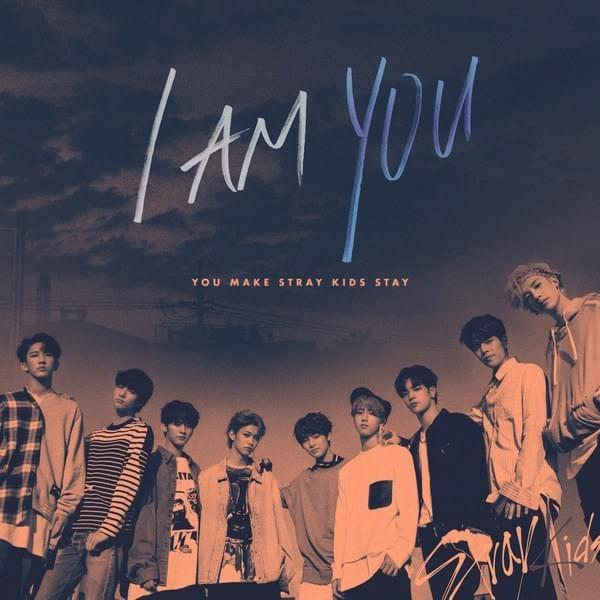
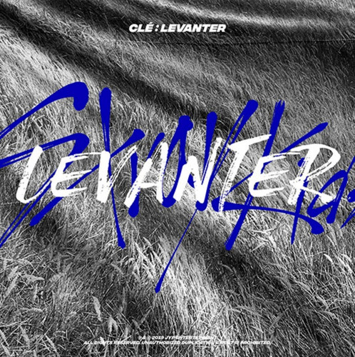
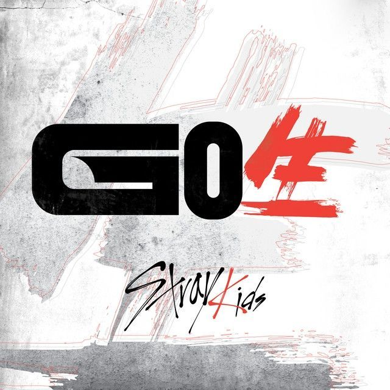
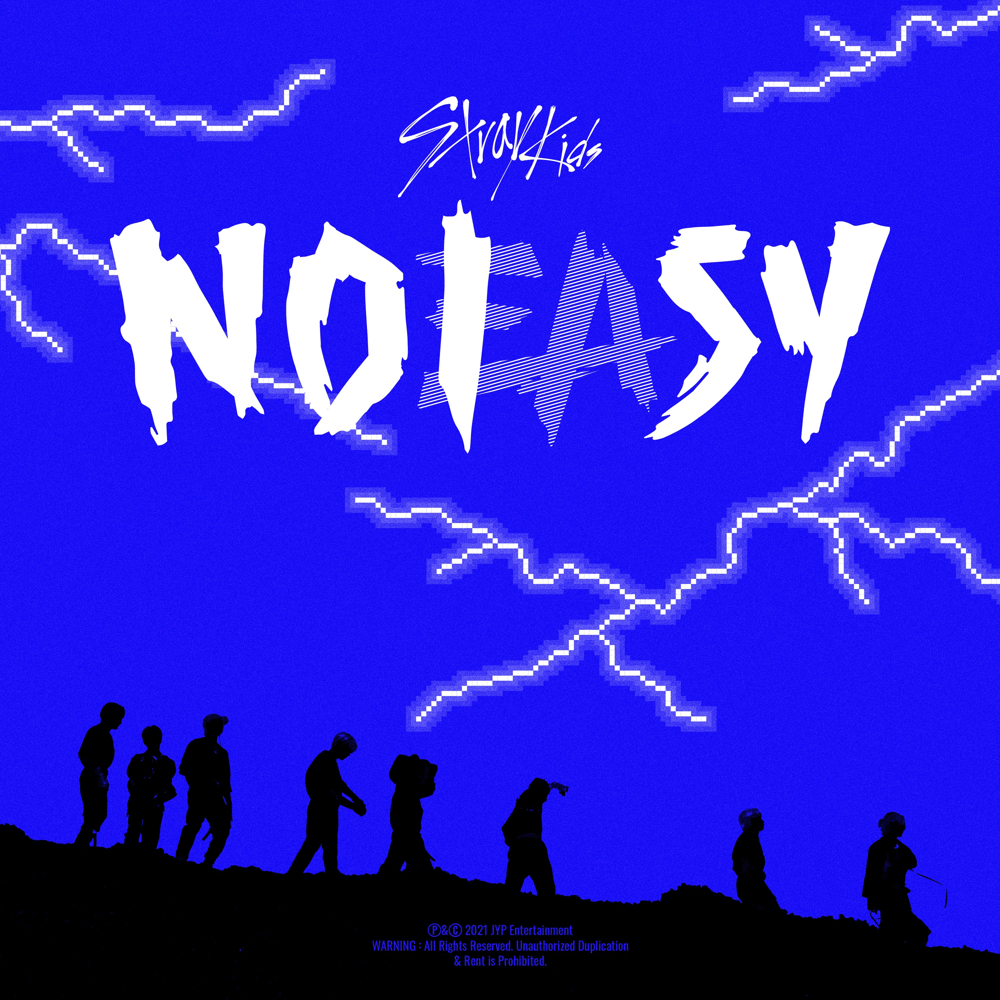

Survival Show
Stary Kids es un grupo surcoreano de k-pop formado en un principio por nueve
integrantes (actualmente son ocho). Su nombre Stray Kids [niños perdidos] significa que juntos
luchan por sus sueños para encontrar su lugar en el mundo. La banda se formó en septiembre del
2017 en un reality show del mismo nombre, organizado por la compañía JYP Entreteniment
la cual buscaba crear una nueva boyband. Reality en el cual no competian entre ellos sin
que demostraban sus habilidades y trabajo en equipo para debutar todos juntos.
Los participantes elegidos fueron:

- Bang Chan
- WooJin
- Lee Know
- Chan Bin
- Hyunjin
- Han
- Felix
- Seungmin
- I.N
Durante el programa fueron eliminados Lee Know y Felix, pero luego se les dió una
nueva oportunidad, y en diciembre regresaron a la competicion.Días despues se anuncio para el 8 de
enero de 2018 el lanzamiento de un Mixtape pre-debut con todad las canciones del programa.
Trilogia I Am
El 6 de marzo de 2018 hicieron su debut oficial como grupo de nueve integrantes.
Publicaron su primer EP(extended play) "I Am Not", para el que escribieron todas
las canciones y el MV para "District 9" que en un día y horas después de su lanzamiento, el video
musical del "District 9" obtuvo 4,274,649 reproducciones en YouTube. Luego de sacar "I Am Not"
continuaria con la trilogia I Am: en agosto de 2018 publicaron su segundo EP "I Am Who",
el cual tuvo como single presentacion "My Pace" que fue un gran exito posicionandoce como el 17° video
de K-pop más visto en sus primeras 24 horas. El 4 de octubre del mismo año fue el lanzamiento de
otro EP "I Am You" dando finalizada la trilogía "I Am".
stay
Stray Kids bautizó a su fandom con el nombre Stay el
1 de agosto de 2018.

I Am Not
- NOT!
- District 9
- Mirror
- Awaken
- ROCK ROCK
- Grow Up
- 3rd Eye

I Am Who
- WHO?
- My Pace
- Voices
- Question
- Insomnia
- M.I.A
- Awkward Silence

I Am You
- YOU.
- I am You
- My Side
- Hero´s Soup
- Get Cool
- N/S
- 0325

Trilogia Clé
El 25 de marzo de 2019 Publicaron un nuevo trabajo, su cuarta extended play
"Clé 1:MIROH", donde volvieron a participar en la compasición y prducción.
En especial la 3RACHA, la subunidad del grupo formada por Bang Chan, Chang Bin
y Han que componen la mayoría de los temas. Con este disco debutaron en el número 3 de la lista
World Albums de la Billboard, gracias al single "MIROH" y el 19 de junio el grupo lanzó su primer
álbum especial "Clé 2:Yellow wood" junto con el sensillo "Side Effects".
El 9 de octubre regresaron con "Double Knot", la ultima cancion interpretada por los nueve integrantes
pues poco despues del single, JYP Entreteniment anunció la salida de Woojin de la banda debido a
problemas personales, dando fin a su contrato.
finalmente el 9 de diciembre se lanzó "Clé Levanter" el cual daría fin a la trilogía
Clé.
Japon
El grupo hizo su debut en Japon el 18 de marzo del 2020, con el album recopilatorio
SKZ2020.

2020
El 17 de junio, Stray Kids lanzó su primer álbum de estudio llamado GO Live
(GO生) junto el tema principal «God's Menu (神메뉴)» Go Live se convirtió en el álbum más
vendido del grupo, debutando en el primer puesto de la lista semanal Gaon Album Chart, y vendió
243.462 copias a finales de mes. Go Live ocupó el puesto número 5 de la lista mensual Gaon Album
Chart. El álbum recibió la certificación de platino de la Gaon Chart por vender más de 250.000 copias
en agosto de 2020, convirtiéndose en el primer álbum del grupo en conseguirlo.«God's Menu» se convirtió
en el primer tema del grupo en aparecer en la Gaon Weekly Download Chart, debutando en el número 144.
Stray Kids lanzó el reempaquetado de su primer álbum de estudio titulado In
Life (IN生) el 14 de septiembre con el tema principal "Back Door".
El 4 de noviembre de 2020, Stray Kids lanzó su primer extended play japonés titulado All In
con el tema principal homónimo y también incluyó las versiones japonesas de «God's Menu (神メニュー)» y
«Back Door», y su primer single japonés «Top».
2021
En los Mnet Asian Music Awards de 2020, se anunció que Stray Kids se uniría a Ateez y The Boyz en la
temporada inaugural de Kingdom: Legendary War, un programa de competición del canal
Mnet.El 28 de mayo, Stray Kids lanzó «Wolfgang», una canción para la ronda final del programa. Durante
la final de Kingdom: Legendary War el 3 de junio, Stray Kids terminó en primer lugar, obteniendo su
propio reality show y aparición en el programa especial Kingdom Week.

El 26 de junio, Stray Kids lanzó el tercer sencillo digital perteneciente al Mixtape Project titulado
«Mixtape: Oh (애)». La canción debutó número 1 en el Billboard World Digital Song
Sales. El 23 de agosto, Stray Kids lanzó su segundo álbum de estudio Noeasy, junto
al tema principal «Thunderous (소리꾼)», Noeasy debutó en el primer puesto del Gaon Album Chart. Hasta
agosto del 2021, el álbum ha vendido más de 1.1 millones de copias, convirtiendo a Stray Kids en el
primer acto bajo JYP Entertainment en vender más de un millón de copias con un álbum.